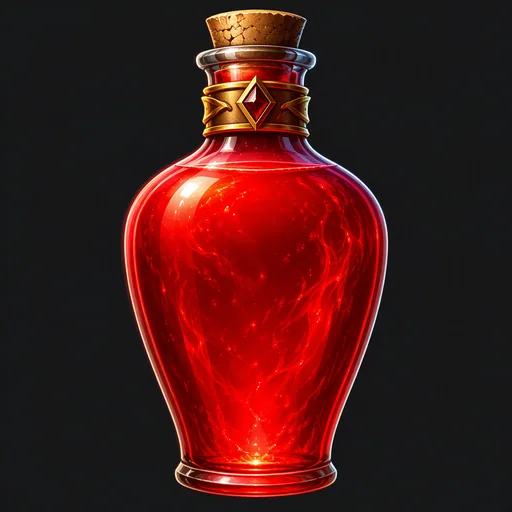
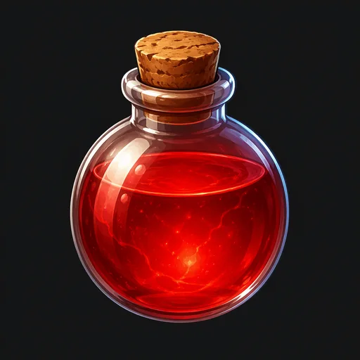
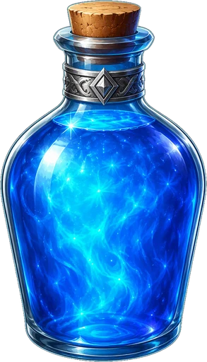
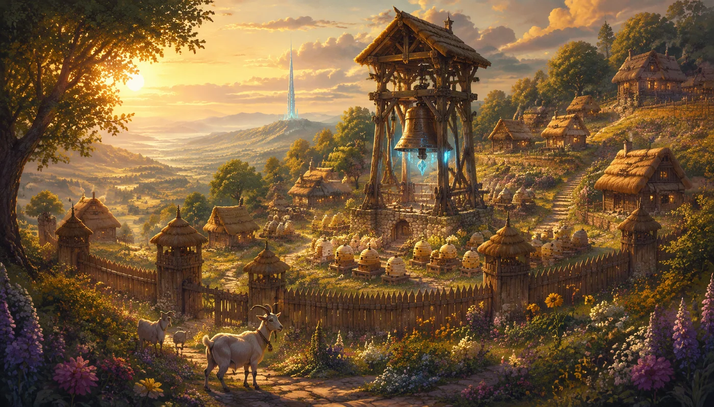
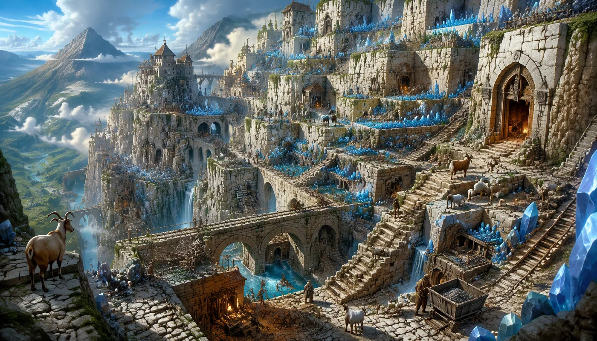
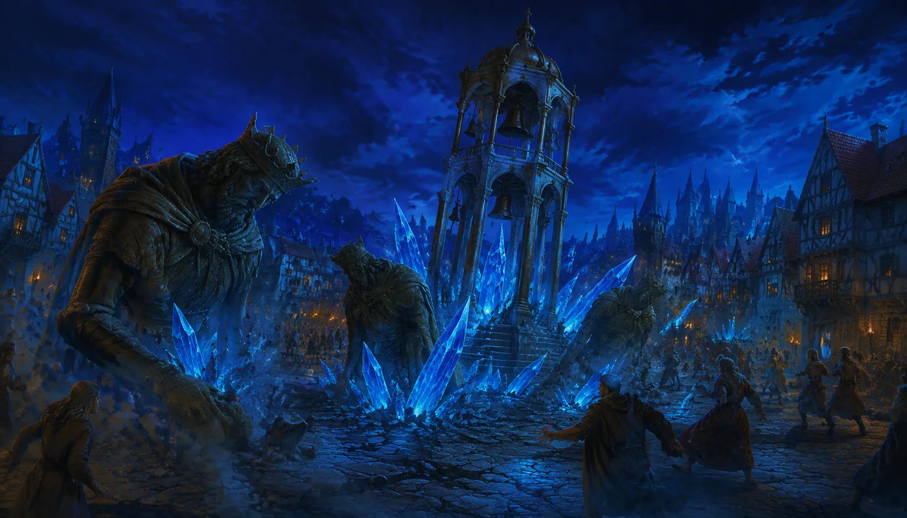
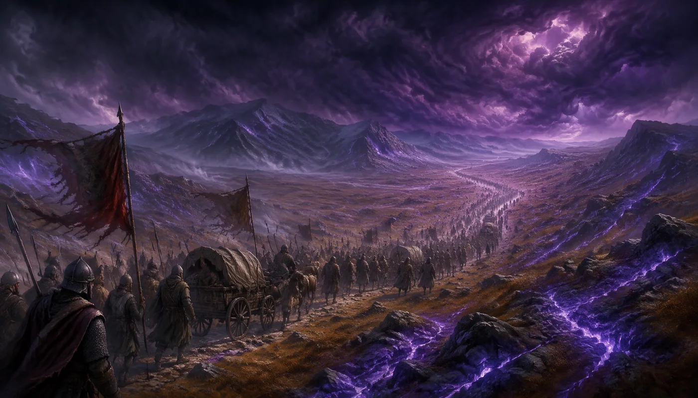
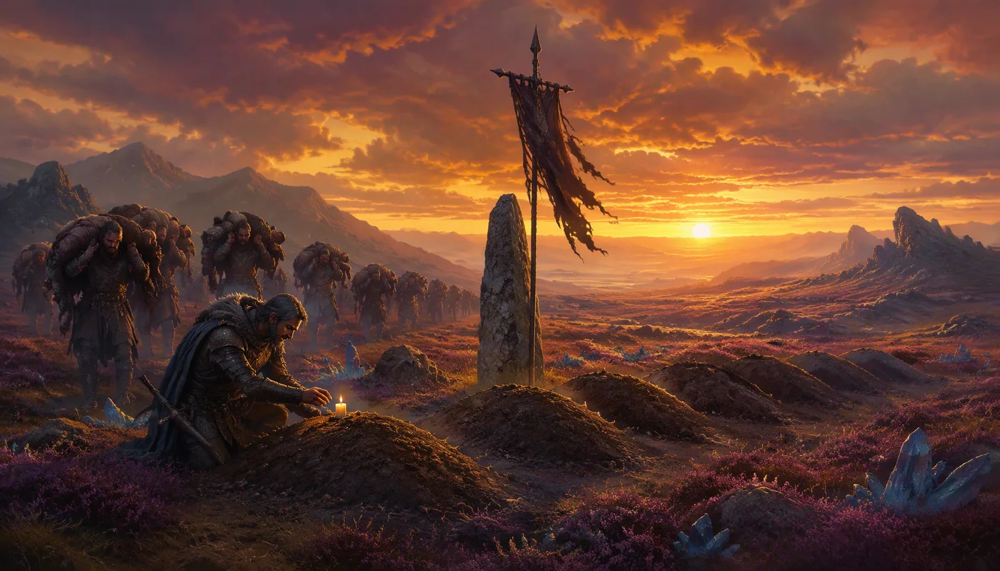
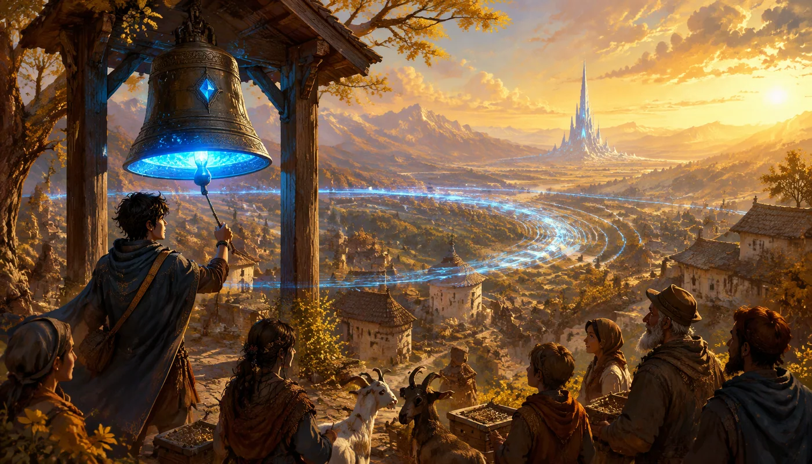

Poção de Vida Grande
Recupera vida na hora.

Wiki
Itens, cartas e histórias do jogo, com a arte de cada um. As páginas crescem conforme a arte fica pronta.
Wiki

Recupera vida na hora.

Recupera vida na hora.

Recupera vida na hora.


Recupera mana na hora.

Recupera mana na hora.

Recupera mana na hora.

Recupera vigor na hora.

Recupera vigor na hora.
Wiki
Wiki



Há três gerações, numa só noite, o cristal rompeu o chão e todos os sinos se calaram.

Sete companhias, uma ordem: ir até onde o azul termina e voltar.

A hoste voltou menor, carregando os mortos nos ombros. Ninguém a dispensou.
A única de joelhos, olhando o norte, na Estrada dos Reis Velhos.

Toda criança do Pouso toca a corda uma vez, e o sino guarda o toque para sempre.

Cada sino aceso é um portal e um pedaço do domo que protege Ermândia.